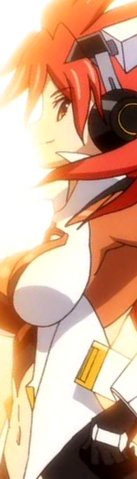

「生きるのを諦めるな！」(無印1話)
Name
天羽 奏
CV
高山 みなみ
Profile
シンフォギアシステム3号「ガングニール」装者。翼とは「ツヴァイウィング」として、防人として無二の相棒だった。姉御肌の明るい性格であり、気弱だった翼をいつも支えていた。
5年前、長野県皆神山でノイズに襲撃された聖遺物発掘チームの唯一の生き残り。家族を殺したノイズへの復讐を強く望み、シンフォギアの適合者になるべく制御薬「LiNKER」を過剰投与した結果、後天的な形で適合者となった。なおLiNKERは人体への負荷が絶大であることから、ギア装着も時間制限付きの限定的なものであり、自身を「時限式」と揶揄していたが、当時の翼はその力を「血反吐にまみれ自ら手にした力」として尊敬していた。
2年前の「ツヴァイウィング」ライブ後のノイズ戦において、ネフシュタン起動実験のためにLiNKER投与を控えていたことから時間切れに陥り、早期決着のため「絶唱」を発動。適合係数の低さとLiNKER投与中断が重なった結果、その負荷が肉体の耐久限界を超越、塵となって死亡した。享年17。死後は回想や幻聴といった形で登場し、翼の心の支えとなっている。また、響に放った「生きるのを諦めるなッ!」という言葉は彼女の人生に影響を与えている。
Gear
ガングニール
聖遺物「ガングニール」の破片から構成されるシンフォギア。メインカラーは朱色。アームドギアは槍で、両手首部分のアーマーを重ねることで構成される。制御薬の投与による限定的な適合であるため、一定時間しか力を発揮できない。
絶唱はアームドギアを介し、渦状エネルギーを放つ貫通特性の高いタイプであるが、ライブ会場で使用した際は周囲のノイズ殲滅のために渦状エネルギーを広域に展開するアレンジが加えられた。
Song
- 君ト云ウ 音奏デ 尽キルマデ